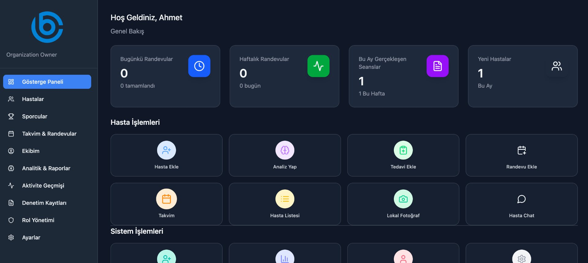
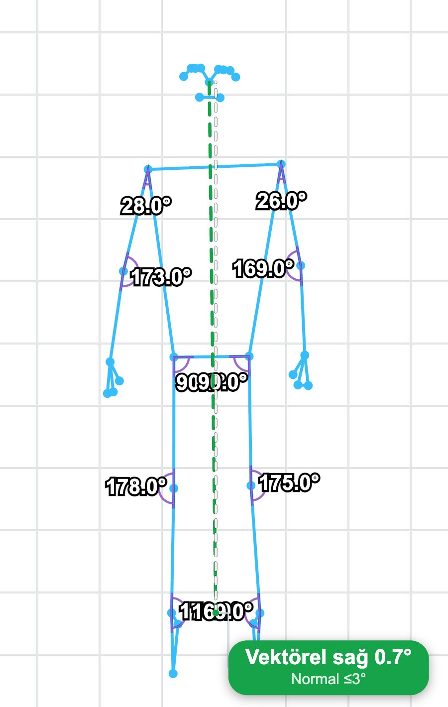
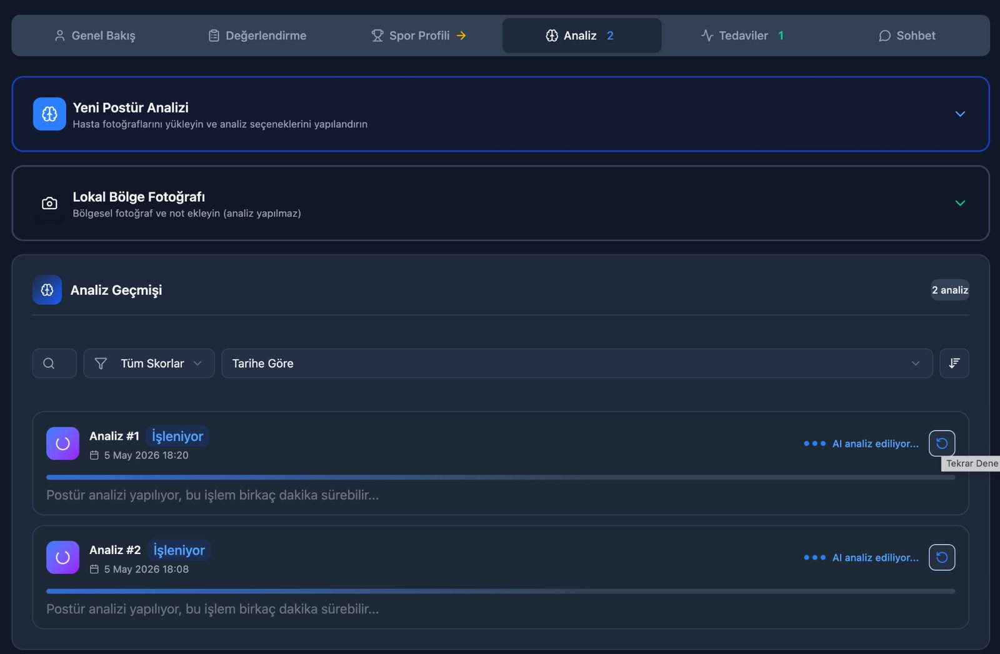
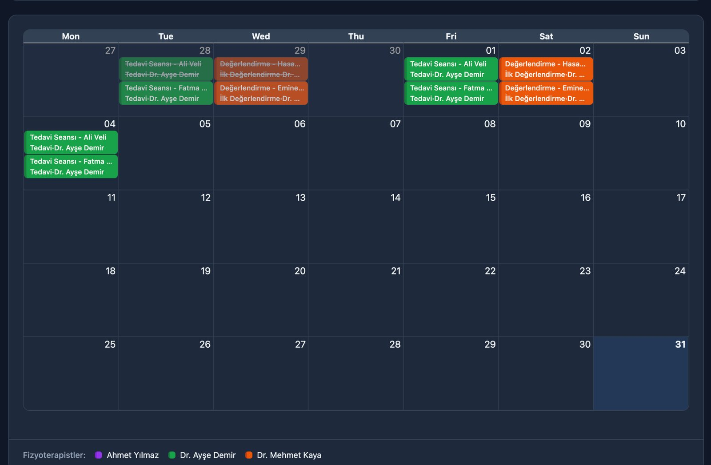

Esenlik merkezleri için yapay zekâ destekli bir yönetim platformuAn AI-powered management platform for wellness centers
CodeBody, esenlik merkezleri için geliştirdiğim bir SaaS. Uzmanların ölçüm, not tutma ve takip yükünü yapay zekâyla hafifletirken randevudan faturaya kadar merkezin günlük işini tek bir yerde topluyor.CodeBody is a SaaS I built for wellness centers. It lightens specialists' load of measurement, note-taking and follow-up with AI, while bringing a center's daily work — from scheduling to billing — into one place.
ProblemThe problem
Esenlik merkezlerinde uzmanların zamanının önemli bir kısmı ölçüm, not ve takibe gidiyor. Postür değerlendirmesi çoğu zaman göz kararı yapılıyor, seans notları sonradan yazılıyor; randevu, mesajlaşma ve faturalama ise farklı araçlara dağılmış durumda.At wellness centers, a large share of specialists' time goes into measurement, notes and follow-up. Posture assessment is often done by eye, session notes are written afterwards, and scheduling, messaging and billing are spread across different tools.
YaklaşımApproach
EkranlarScreens




MimariArchitecture
- Ön yüz: React 18 + TypeScript + Vite + TailwindFrontend: React 18 + TypeScript + Vite + Tailwind
- Backend API: FastAPI + SQLAlchemy + PostgreSQLBackend API: FastAPI + SQLAlchemy + PostgreSQL
- AI servisi: poz kestirimi ve postür analizi (MediaPipe, YOLO, SAM)AI service: pose estimation and posture analysis (MediaPipe, YOLO, SAM)
- Whisper servisi: konuşmadan metne (faster-whisper)Whisper service: speech-to-text (faster-whisper)
- Celery + Redis: transkripsiyon, AI analizi, e-posta ve bildirim kuyruklarıCelery + Redis: transcription, AI analysis, email and notification queues
- Güvenlik: çok kiracılı rol tabanlı yetki, modül ve plan kapıları, açık rıza, denetim kaydı, CrowdSecSecurity: multi-tenant role-based access, module and plan gates, consents, audit logs, CrowdSec
SonuçOutcome
CodeBody canlıda: codebody.com.tr. Ölçüm, not ve takip gibi tekrar eden işleri yapay zekâya devrederek uzmanın danışanıyla geçirdiği zamana odaklanmasını hedefliyor.CodeBody is live at codebody.com.tr. By handing repetitive work such as measurement, notes and follow-up to AI, it aims to let specialists focus on time with their clients.
Benzer bir problem üzerine mi düşünüyorsunuz?Thinking about a similar problem?
Mimari, yapay zekâ entegrasyonu ya da ürünleştirme üzerine konuşmaktan memnuniyet duyarım. Satış görüşmesi değil, sadece bir sohbet.I'm happy to talk through architecture, AI integration or productisation. Not a sales call — just a conversation.
TanışalımLet's talk